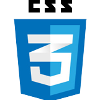

Innovative Security Designs Client
- Abstract -
Innovative Security Designs (ISD) provides IP-addressed security cameras and associated software. Users can connect multiple ISD cameras to a router via ethernet cable and create a local grid of cameras based on the user's network.
- Project Context -
I worked as a software engineer intern at ISD for a summer, with my time focused on the ISD desktop client. The client is the primary tool users have for managing and configuring their network of cameras. Because of company's small size I worked across the stack on the product, ranging from network-level socket work to creating the software UI.
- Tools -

C++ |
Qt, |
CSS |
Wireshark |
- Software Development & UI Design -
ISD's client is built with Qt, an open-source C++ framework for making software and deploying to any platform. Qt's high flexibility allows the desktop client to translate to iOS and Android versions without any refactoring of code, so my fellow intern could easily pull from my code repo to create ISD Mobile.
(Above) The landing page for the desktop client. The table is populated with cameras found from an HTTP broadcast sent from software launch or pressing "Refresh List". Each camera's response packets contain associated metadata, and are parsed according to a provided protocol to give information on IP address, time running, etc.
-
To facilitate visualizing cameras I added functionality to take a "snapshot" of each camera's feed and include it as a thumbnail. This allows the user to quickly get cursory information on a camera's feed, without manually opening a video stream. A 'refresh thumbnails' button above the table allows for easy updates, and for flexibility a toggled checkbox collapses images to condense the table into raw data.

-
(Above) A configuration dialog opens on a double-click to any table row. From here users can submit new settings to re-configure any particular camera via HTTP POST.
(Below) A toggle from the landing page switches to the firmware feature, where users can apply batch updates to cameras. For both the landing and firmware pages users can apply search filters to display only particular sets of cameras based on any data parameter (E.G. "Name: 'Hallway'").
-